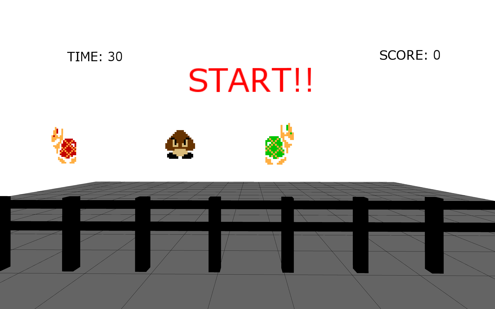
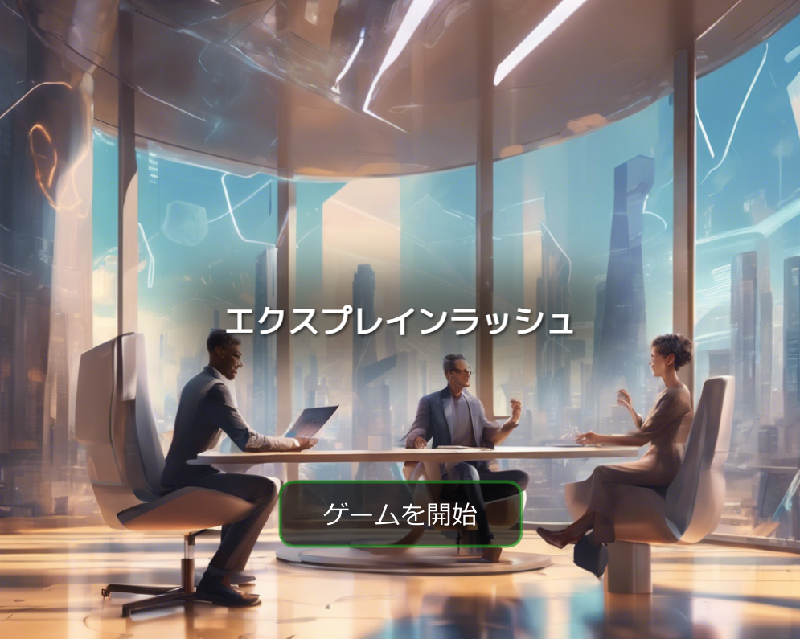
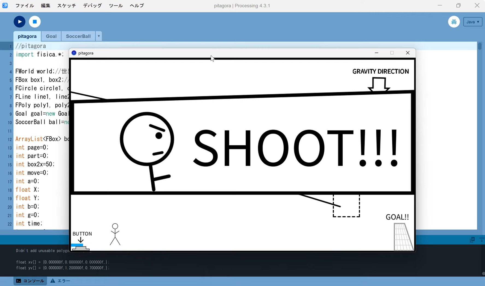
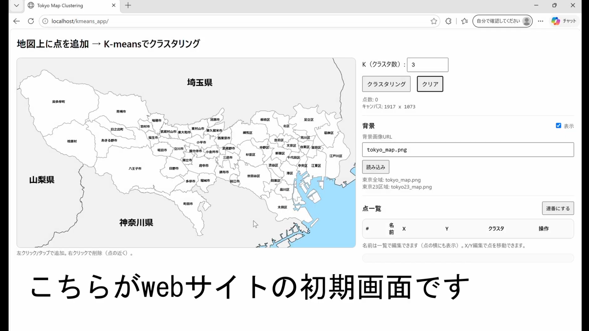
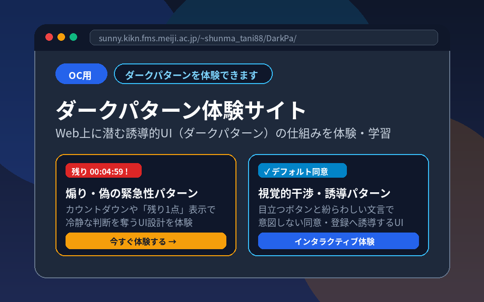

自己紹介
- 所属:明治大学総合数理学部先端メディアサイエンス学科
- 氏名:谷 俊磨
- ふりがな:たに しゅんま
- 生年月日:2006年01月08日
学歴
| 入学 | 卒業 | 学校名 |
| 2021年4月 | 2024年3月 | 東京都立三田高等学校 |
| 2024年4月 | 在学中 | 明治大学総合数理学部先端メディアサイエンス学科 |
資格
| 取得日 | 資格名 |
| 2021年10月 | 情報処理技能検定 表計算 3級 |
| 2021年10月 | プレゼンテーション作成検定 3級 |
| 2022年2月 | 日本語ワープロ検定 準2級 |
| 2022年3月 | 実用英語技能検定 2級 |
| 2025年11月 | 基本情報技術者 |
| 2025年12月 | 情報セキュリティマネジメント |
| 2026年4月 | 普通自動車第一種免許 |
特技・趣味
私の特技はサッカーです。小学1年生から高校3年生までプレイしていました。ポジションはボランチで、司令塔の役割を担っていました。
そこから得た、冷静な判断力と集中力は私の武器です。
また私の趣味はアニメや漫画鑑賞です。ワールドトリガーという漫画が一番好きで、ジャンプ史上最高の集団戦と評価される作品です。
多くのキャラクターが登場し、一人一人に特徴があるため、非常に読み応えのある作品となっています。
主な作品

3Dシューティングゲーム
EP演習作品

エクスプレインラッシュ
プログラミング演習作品

ピタゴラ装置
MP実習作品

クラスタリング
自由制作

ダークパターン体験サイト
OC用
ダークパターンを体験できます